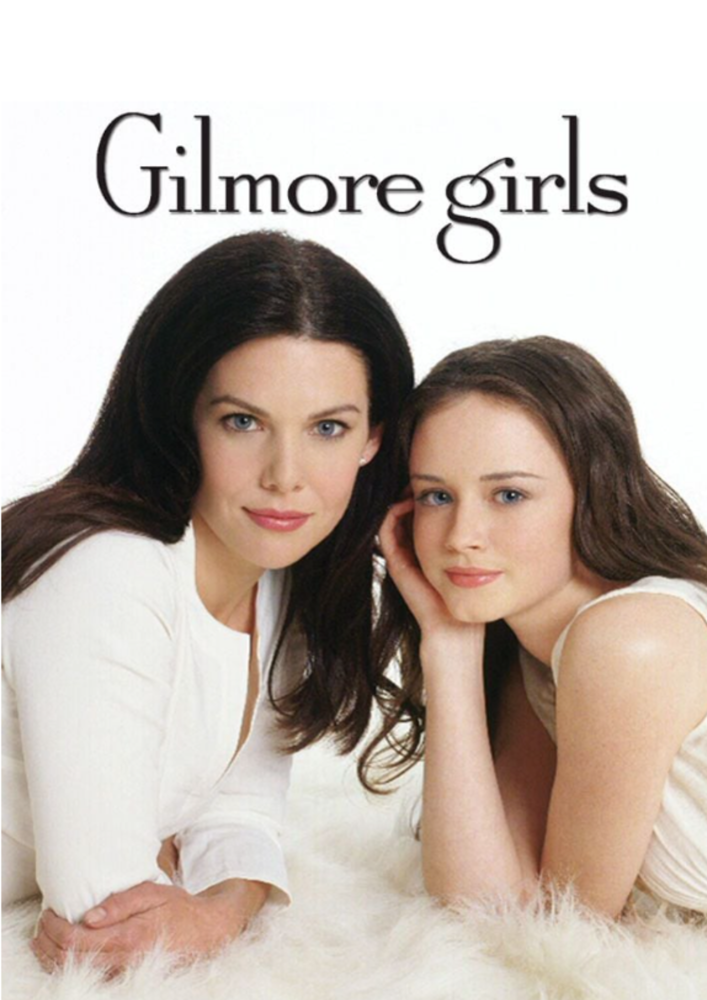

El amor después del amor
- Calificación:
- Fecha de estreno: 26 de abril de 2023
- Duración: 36-46m
- Sinopsis: La trama cuenta los inicios, la carrera, los problemas y el estrellato del cantautor argentino Fito Páez, uno de los máximos exponentes del rock nacional. La serie recorre los primeros 30 años de vida del rockstar argentino Fito Páez, comenzando por sus inicios en la ciudad de Rosario y su llegada exitosa a la escena musical nacional e internacional, incluyendo sus momentos de éxitos y sus altibajos.
- Género: Drama

Divsión Palermo
- Calificación:
- Fecha de estreno: 17 de febrero de 2023
- Duración: 23-29m
- Sinopsis: La trama sigue a un grupo de personas que representan a una minoría social y juntos forman una guardia de protección barrial. Este grupo de civiles es reclutado para conformar una especie de guardia urbana para servir a la comunidad y a su vez resulta ser una operación de marketing para mejorar la pésima imagen que tienen actualmente las fuerzas de seguridad; sin embargo, los miembros de este nuevo escuadrón pronto descubren que tienen que hacer frente a una banda criminal liderada por unos extraños narcotraficantes.
- Género: Comedia, Crímen

Ahsoka
- Calificación:
- Fecha de estreno: 22 de agosto de 2023
- Duración: 36-54m
- Sinopsis: Ahsoka, también conocida como Star Wars: Ahsoka, es una miniserie estadounidense. Es parte de la franquicia Star Wars y un derivado de la serie The Mandalorian, que tiene lugar en el mismo período de tiempo que esa serie y sus otros spin-offs interconectados después de los eventos de Return of the Jedi (1983), mientras que también sirve como una continuación de la serie animada Star Wars Rebels. La serie sigue a Ahsoka Tano mientras investiga una amenaza emergente para la galaxia tras la caída del Imperio.
- Género: Acción

Barrabrava
- Calificación:
- Fecha de estreno: 26 de junio de 2023
- Duración: 35-45m
- Sinopsis: La serie cuenta la historia de César y su hermano “Polaco”, quienes forman parte de la barra brava del Club Atlético Libertad del Puerto, la cual es liderada por “El Tío” Gustavo Garzón. A partir de una disputa interna, los hermanos son expulsados del grupo de su amado club de fútbol. Ante esto, César y “Polaco” le declararán la guerra a la barra brava, poniendo en riesgo su integridad, su vida y la relación entre ellos.
- Género: Drama

The last of us
- Calificación:
- Fecha de estreno: 15 de enero de 2023
- Duración: 43-81m
- Sinopsis: The Last of Us es una serie de televisión estadounidense postapocalíptica que se estrenó el 15 de enero de 2023 a través de HBO. Basada en el videojuego de 2013 del mismo nombre desarrollado por Naughty Dog, la serie sigue a Joel (Pedro Pascal), un contrabandista encargado de escoltar a la adolescente Ellie (Bella Ramsey) a través de un Estados Unidos postapocalíptico. También cuenta con Tommy (Gabriel Luna), el hermano menor de Joel y exsoldado.
- Género: Drama

La Reina Charlotte
- Calificación:
- Fecha de estreno: 5 de mayo de 2023
- Duración: 53-86m
- Sinopsis: La joven reina asciende a la prominencia y el poder mientras que su matrimonio con el rey Jorge da paso a una gran historia de amor.
- Género: Drama, Romance

Gilmore girls
- Calificación:
- Fecha de estreno: 5 de octubre de 2000
- Duración: 42m
- Sinopsis: Ubicado en un pueblo de cuentos de Connecticut, poblado por una combinación ecléctica de soñadores, artistas y personajes comunes, este drama multi generacional sobre los centros de familia y amistad alrededor de Lorelai Gilmore y su hija, Rory.
- Género: Drama, Romance

Friends
- Calificación:
- Fecha de estreno: 22 de septiembre de 1994
- Duración: 22m
- Sinopsis: Tres hombres y tres mujeres jóvenes son mejores amigos y viven en el mismo conjunto de apartamentos. Ellos enfrentan la vida y el amor en la ciudad de Nueva York y se involucran en los asuntos personales de los demás, donde incluso a veces intercambian novios o novias, lo que algunas veces genera situaciones que las personas comunes quizás nunca experimentan, especialmente durante las rupturas.
- Género: Comedia